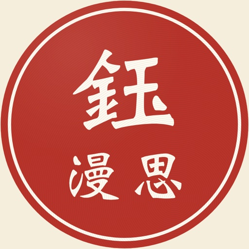
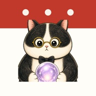

鈺漫思
紫微・八字
命理不是拿來怕的,是拿來用的。
研究紫微、八字這些年,我覺得它們最有用的地方,不是告訴你會發生什麼,是幫你在日常裡做比較好的決定。所以我開始把它們做成工具。
作品

喵吉曆
一隻嘴很壞的貓,每天用你的生日幫你挑時機。分數是規則算的,同一天同一個生日算一百次都一樣。
之後還會有更多。
找到我

命理不是拿來怕的,是拿來用的。
研究紫微、八字這些年,我覺得它們最有用的地方,不是告訴你會發生什麼,是幫你在日常裡做比較好的決定。所以我開始把它們做成工具。

一隻嘴很壞的貓,每天用你的生日幫你挑時機。分數是規則算的,同一天同一個生日算一百次都一樣。
之後還會有更多。